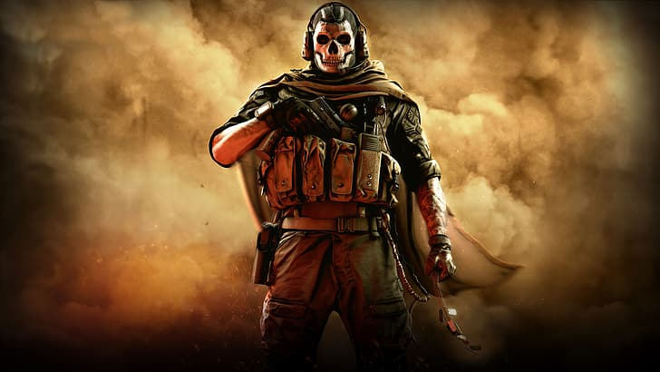

En las ultimas horas, han estallado las redes sociales debido a que algunos usuarios lograron filtrar informacion acerca del call of duty de este año, a pesar de que todavia faltan unas semanas para ver el gameplay del nuevo juego, hoy 18 de mayo se lanzaron varias imagenes y videos en la plataforma de twitter, aunque Activision Blizzard logro borrar varios de estos tweets, ya se hizo trending a nivel global todo lo que se puedo observar de los videos, tales como las armas, el diseño del personaje, las texturas del mapa y el nuevo motor grafic que se venia planteando, con todo esto, miles de fanaticos alrdedor del mundo no pudieron evitar elevar sus expectativas del siguiente titulo, que llevara como Nombre: Call Of Duty Modern Warfare 2
